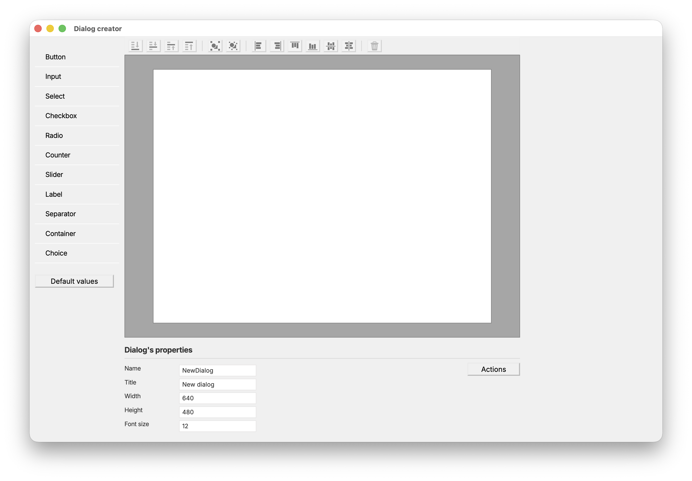

Dialog Creator
Dialog Creator v1.0.0 (part of the RODA Tools) is a software to create graphical dialog interfaces to construct a written command line.

The dialogs constructed with this application are intended to be imported into a main (different) application, that will use the constructed command and send it to the language of choice.
This app uses Node.js and Electron that help building cross-platform desktop applications embedding HTML, CSS, and JavaScript. It is available in multiple formats, depending on the operating system: apart from the GitHub source files, platform specific binaries and installers are also available.
Contact: roda[at]roda.ro
For issues and bug reports, please use the GitHub issues page.